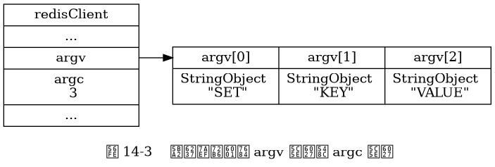

第 14 章《服务器》勘误¶
178 页¶
图 14-3 中错误地包含了两个 argv[1] ，
其中第二个 argv[1] 应为 argv[2] ，
以下是修正后的图片：

感谢 凯旋冲锋 反馈这个错误。
182 页¶
14.1.5 节第一句中的：
并将命令的参数和参数个数分别保存到了客户端状态的
argv属性和argv属性里面
这一句中的第二个 argv 应为 argc ，修正后的句子为：
并将命令的参数和参数个数分别保存到了客户端状态的
argv属性和argc属性里面
感谢 kevin 反馈这个错误。
183 页¶
图 14-6 中错误地包含了两个 argv[1] ，
其中第二个 argv[1] 应为 argv[2] ，
以下是修正后的图片：
![digraph {
label = "\n 图 14-6 客户端状态";
//
rankdir = LR;
node [shape = record];
redisClient [label = " redisClient | ... | <cmd> cmd | <argv> argv | argc \n 3 | ... ", width = 2];
set [label = " <head> redisCommand | name \n \"set\" | <proc> proc | arity \n -3 | sflags \n \"wm\" | ... "];
setCommand [label = "void setCommand(redisClient *c);", shape = plaintext];
//* fix editor highlight
redisClient:cmd -> set:head; set:proc -> setCommand;
argv [label = " { { <head> argv[0] | StringObject \n \"SET\" } | { argv[1] | StringObject \n \"KEY\" } | { argv[2] | StringObject \n \"VALUE\" } } "];
redisClient:argv -> argv:head;
}](../_images/graphviz-18be5184092d216a7a41449b88b970145bdb9cd1.png)
感谢 凯旋冲锋 反馈这个错误。
185 页¶
14.2.1 末尾对 unixtime 属性以及 mstime 属性的精度进行描述的句子：
服务器只会在打印日志、 更新服务器的 LRU 时钟、 决定是否执行持久化任务、 计算服务器上线时间（uptime）这类对时间精确度要求不高的功能上。
应该改为：
服务器只会在打印日志、 更新服务器的 LRU 时钟、 决定是否执行持久化任务、 计算服务器上线时间（uptime）这类对时间精确度要求不高的功能上使用
unixtime属性和mstime属性。
其中加粗内容为新增内容。
感谢 zionwu 反馈这个错误。
189 页¶
14.2.7 节第一句：
……，第 9 章经对这些操作进行了详细的说明。
中少了一个“已经”的“已”字， 以下是修正后的内容：
……，第 9 章已经对这些操作进行了详细的说明。
感谢 kimi_可米 反馈这个错误。